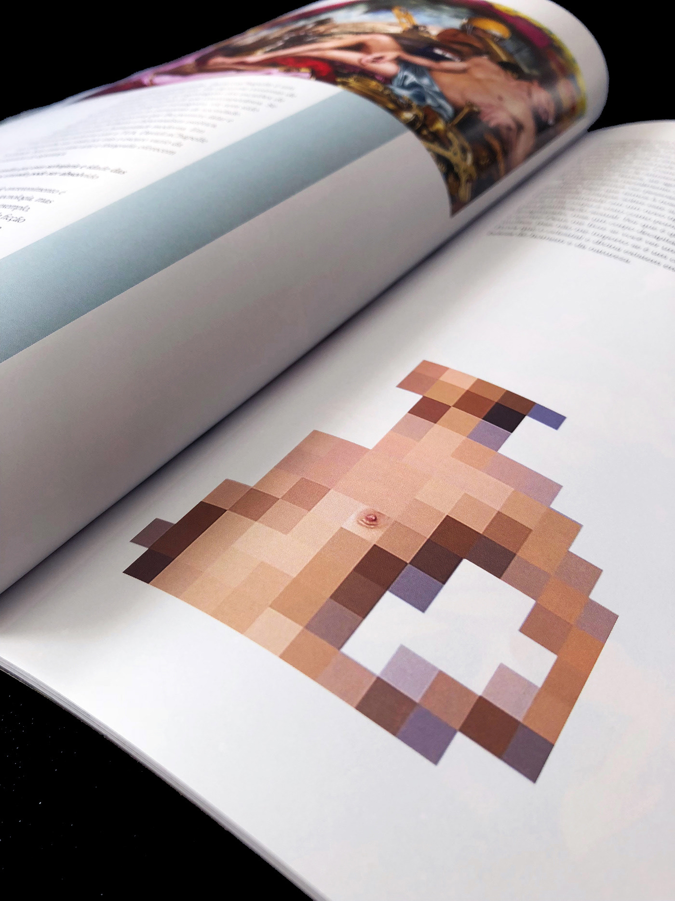
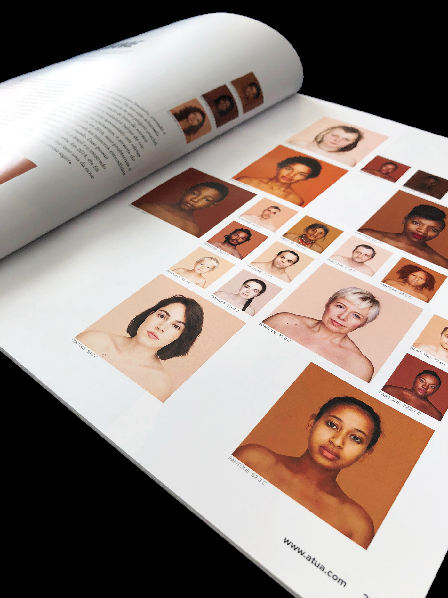

a.TUA
projeto desenvolvido pelo grupo: Amanda Minto, Giulia Golfari, Natália Farah,
Nathallie Carramillo e Ruth Dayan para as disciplinas: Projeto III, Marketing,
Comunicação e Linguagem e Produção Gráfica
a revista a.TUA tem como objetivo explorar o corpo humano como linguagem
artística. criada a partir do tema linguagem, a revista explora temas como
identidade, gênero, sexualidade, crenças, arte e cultura, abrindo espaço para a
discussão e reflexão de tabus que envolvem o corpo e suas diferentes
representações no universo artístico. a.TUA quebra muito as expectativas: e durante
seu processo longo, acima de tudo, quebrou a nossa, especialmente pela força do
conteúdo e as dificuldades em achar imagens conceituais em alta qualidade. sendo
talvez o trabalho mais trabalhoso e complexo que já fiz, a.TUA exigiu e resultou em
longas pesquisas, entrevistas, criatividade, estômago, amor e (nas poucas noites
bem dormidas) sonhos de diagramação. seu resultado, apenas 1 sentimento:
orgulho.



